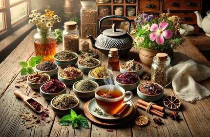

Жизнь в гармонии с природой
Мягкий ритм, в котором человек не потребляет бездумно, а живет в балансе с окружающим миром.
Проект осознанной жизни
Здоровье. Экология. Счастье.
Мы верим, что благополучие человека начинается с заботы о природе. Когда еда чистая, воздух свежий, а выбор осознанный, появляется энергия, спокойствие и уверенность в завтрашнем дне.
Начать путь к гармонииНаше видение
Мягкий ритм, в котором человек не потребляет бездумно, а живет в балансе с окружающим миром.
Осознанный выбор поддерживает чистую почву, воду и дает организму натуральные источники питательных веществ.
Проверенные временем практики помогают бережно поддерживать здоровье и качество жизни на долгие годы.
Здоровье
Экология
Осознанное потребление, поддержка экологичного производства и ежедневные привычки с меньшим следом помогают менять ситуацию уже сегодня.
Перейти к простым шагамСвязь экологии и здоровья
Чище почва и вода, бережнее процессы выращивания и переработки.
Снижение количества лишних добавок и токсинов в ежедневном рационе.
Каждая покупка становится вкладом в доброе, устойчивое будущее.
Природа как аптека
Дополняют рацион полезными веществами из природных источников.
Традиционный формат мягкой поддержки организма в течение года.
Используются для расслабления, восстановления и ежедневных ритуалов.
Уход за кожей с акцентом на натуральность и деликатность состава.
Питание
Сезонные продукты с акцентом на свежесть и естественный вкус.
Ответственное производство и прозрачность происхождения.
Основа долгой сытости, энергии и сбалансированного рациона.
Ягоды, семена и растительные источники, которые ценят за состав.
Жизнь в экостиле
Народная медицина
Народные практики напоминают о простом: природа уже дала нам многое для повседневной профилактики, восстановления и заботы о себе. В центре подхода не только средство, но и образ жизни.

Природные помощники
Теплый домашний ритуал в сезон простуд и перемен погоды.
Мягкий вечерний напиток для спокойствия и восстановления.
Природный источник ценных веществ в ежедневном рационе.
Классический продукт пчеловодства в домашней аптечке.
Свежесть и дыхательный комфорт в сезонной поддержке.
Наука подтверждает
Исследования активно изучают антиоксидантные свойства ягод и растений.
Отмечается связь ароматерапии с ощущением снижения стресса и напряжения.
Используется как часть комплексного подхода и образа жизни.
Натуральные продукты ценятся за понятный и сбалансированный профиль.
Итоговая ценность
Возвращение к естественным привычкам, которые поддерживают внутреннее равновесие.
Осознанный выбор продуктов с понятным происхождением и составом.
Каждый ежедневный выбор уменьшает экологическую нагрузку.
Больше энергии, спокойствия и устойчивого ощущения благополучия.
Как начать
Выбирайте органические продукты
Изучайте рецепты народной медицины
Сокращайте использование пластика
Поддерживайте локальных эко-производителей
Делитесь знаниями с близкими
Каждый маленький выбор в пользу экологии и здоровья делает мир чище, добрее и счастливее.
Начните сегодня